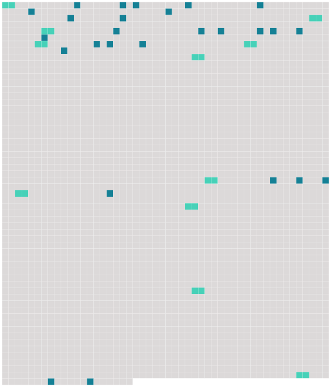

Longueur nb maillons : 37 mentions |
 |
[Une dame] entra, avec un froissement d’ étoffes raides. [Elle] jeta un regard soupçonneux autour d’ [elle] [Elle] n’ était plus jeune ; et pourtant [elle] portait une robe claire, avec des manches larges ; [elle] tenait sa traîne à la main, pour ne rien frôler. Cela ne [l’] empêcha pas de venir près du fourneau, de regarder les plats, et même d’ y goûter. Quand [elle] levait un peu la main, la manche retombait, et le bras était nu jusqu’ au-dessus du coude : ce que Christophe trouva laid et malhonnête. De quel ton sec et cassant [elle] parlait à Louisa!! Et comme Louisa [lui] répondait humblement!! [2 phrases] [La dame] demanda qui était ce petit garçon ; Louisa vint le prendre et le présenter ; elle lui tenait les mains pour l’ empêcher de se cacher la figure ; et, bien qu’ il eût envie de se débattre et de fuir, Christophe sentit d’ instinct qu’ il fallait cette fois ne faire aucune résistance. [La dame] regarda la mine effarée de l’ enfant ; et [son] premier mouvement, maternel, fut de lui sourire gentiment. Mais [elle] reprit aussitôt [son] air protecteur, et lui [posa] sur [sa] conduite, sur [sa] piété, des questions auxquelles il ne répondit rien. [Elle] regarda aussi comment les vêtements allaient ; et Louisa s’ empressa de montrer qu’ ils étaient superbes. [2 phrases] [La dame] le prit par la main, et [dit] qu’ [elle] voulait le conduire vers [ses] enfants.
Christophe jeta un regard désespéré sur sa mère ; mais elle souriait à [la maîtresse] d’ un air si empressé qu’ il vit qu’ il n’ y avait rien à espérer, et il suivit [son] guide, comme un mouton qu’ on mène à la boucherie. [3 phrases] Christophe, abandonné par [la dame] , restait planté dans une allée, sans oser lever les yeux. [51 phrases] [La dame] accourut, aussi vite que la traîne de [sa] robe pouvait le [lui] permettre. Christophe [la] voyait venir, et il ne cherchait pas à fuir ; il était terrifié de ce qu’ il avait fait : c’ était une chose inouïe, un crime ; mais il ne regrettait rien. [4 phrases] [La dame] fondit sur lui. [1 phrases] Il entendit qu’ [elle] lui parlait d’ une voix furieuse, avec un flot de paroles ; mais il ne distinguait rien. [4 phrases] Elle le secoua plus fort et le traîna par la main vers [la dame] et les enfants, pour qu’ il se mît à genoux. [32 phrases] Tous ses malheurs de la journée l’ accablaient à la fois : tout ce qu’ il avait souffert, l’ injustice des enfants, l’ injustice de [la dame] , l’ injustice de ses parents, et – ce qu’ il sentait aussi, comme une blessure vive, sans s’ en rendre compte, – l’ abaissement de ses parents, dont il était si fier, devant ces autres gens, méchants et méprisables. [31 phrases] [Sa mère] , l’ orgueilleuse dame, venait le supplier : « [Ma] pauvre fille se meurt. [Je] vous en prie, venez!! |
 |
La ressource peut être téléchargée sur la page Ortolang
Si vous avez des questions ou vous voyez des erreurs, merci d'envoyer un mail à silvia.federzoni89@gmail.com
Site développé par S. Federzoni (contact)